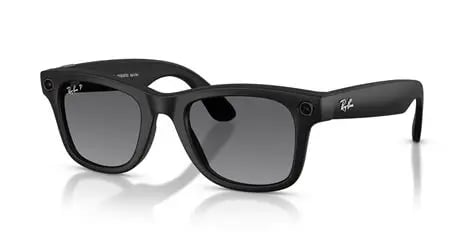
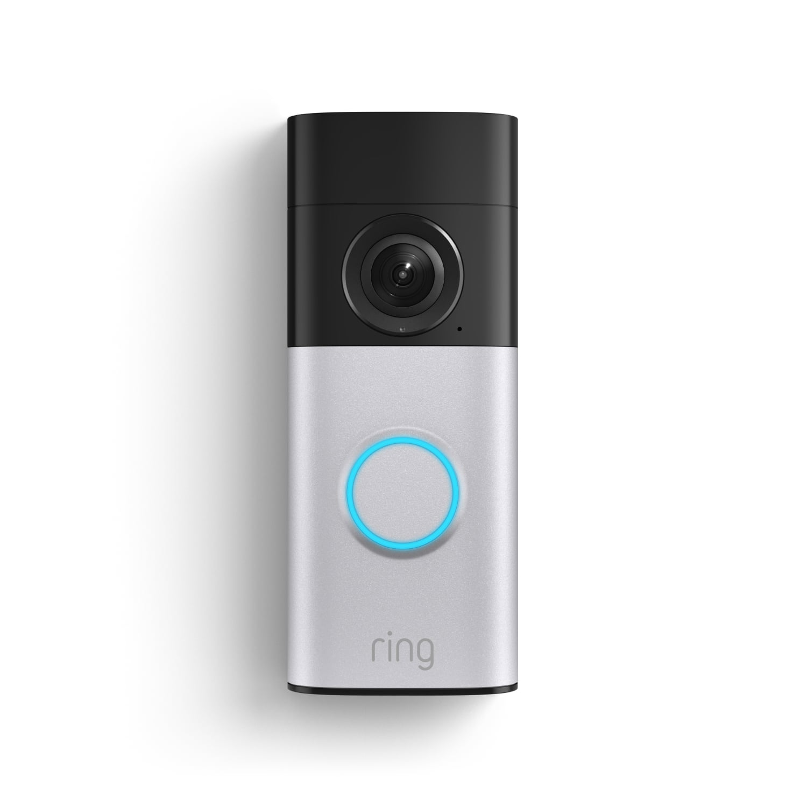
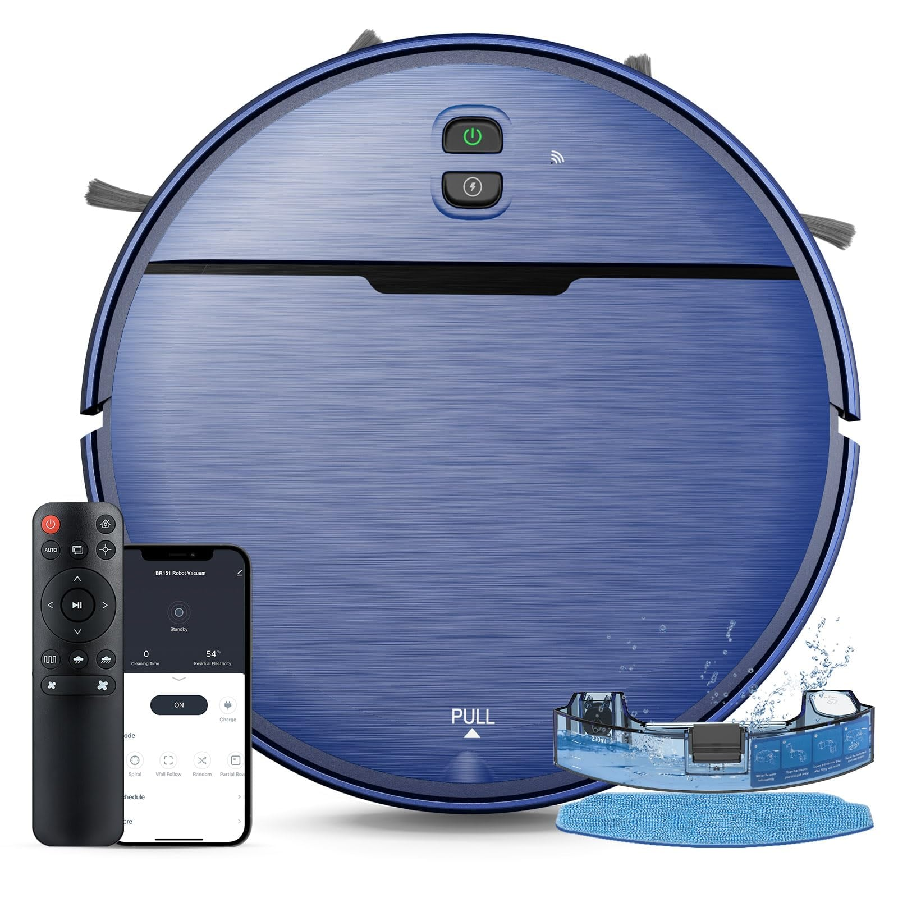

What are examples of
IoT devices?
Let’s look at some examples of IoT systems in use today:
Meta Ray-Ban glasses

Meta Ray-Ban Glasses are an IoT device because they can connect to other devices and the internet to send,
receive, and process data.
They have built-in cameras, microphones, and speakers that allow them to perform
connected functions such as taking photos, making calls, and responding to voice commands.
Ring Video Doorbell

Ring Video Doorbell is an IoT device because it connects to the internet to send live video, notifications,
and other information to a
user's phone or computer. Its camera and sensors collect data from its surroundings,
allowing users to monitor their door remotely.
Self Driving Car
Self-Driving Car is an IoT device because it uses sensors, cameras, GPS, and internet connectivity to collect
and exchange data.
This information helps the vehicle understand its surroundings, navigate roads, and make driving
decisions with minimal human input.
Robot Vacuum

Robot Vacuum A connected vacuum that uses sensors and internet connectivity to navigate, clean, and receive commands remotely.
Smart Watch

Smartwatch A wearable device that connects to other devices and the internet to collect and exchange data such as activity, location, and notifications.
Smart Lock
Smart Lock A connected lock that can communicate with a phone or network, allowing users to lock or unlock it remotely.